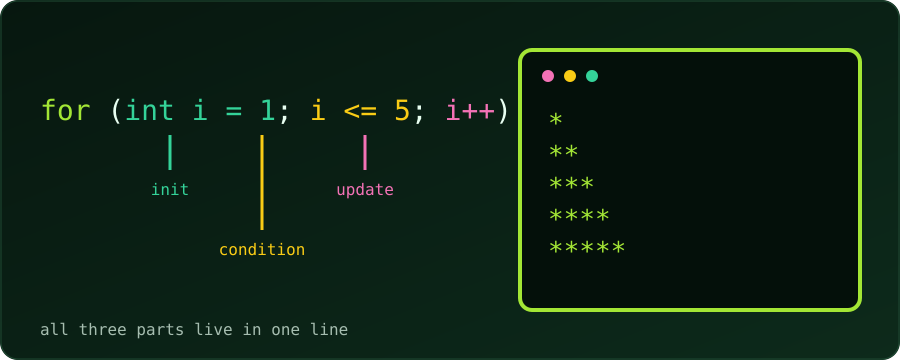

Five problems, from beginner to intermediate, to build confidence with the for loop. Try each one on paper or in your editor first. If we get stuck, open See hint for the steps, and press Reveal code to compare with a tested solution.
Every solution was compiled with gcc -Wall -Wextra and run; the outputs shown are real. For a companion set, see 5 while loop practice problems.
Anatomy of a for loop. for (init; condition; update) runs init once, tests condition before every pass, and runs update after every pass. It is the same recipe as a while loop, with all three parts gathered in one line.
Problem 1 (Easy): Multiplication Table
Write a program that asks for an integer and prints its multiplication table from 1 to 10 using a for loop.
Input: 5
Expected output (first and last lines):
5 x 1 = 5
5 x 2 = 10
...
5 x 10 = 50- Read the number into
n. - Let the loop counter
irun from 1 to 10 (i <= 10). - Print
n,iandn * iin oneprintf.
#include <stdio.h>
int main(void) {
int n;
printf("Enter an integer: ");
scanf("%d", &n);
for (int i = 1; i <= 10; i++) {
printf("%d x %d = %d\n", n, i, n * i);
}
return 0;
}Try next: let the user also choose where the table stops (instead of always 10).
Problem 2 (Easy): Factorial
Take a non-negative integer N and print its factorial, N!: the product of all positive integers up to N (for example, 5! = 5 × 4 × 3 × 2 × 1 = 120).
Input: 4
Expected output:
Factorial of 4 is 24- Start an accumulator
factat 1, not 0 (anything times 0 stays 0). - Loop
ifrom 2 toN. - Multiply:
fact *= i. - Use
long long:intoverflows at 13!.
#include <stdio.h>
int main(void) {
int n;
printf("Enter a non-negative integer: ");
scanf("%d", &n);
long long fact = 1; // 1 is the identity for multiplication (and 0! = 1)
for (int i = 2; i <= n; i++) {
fact *= i;
}
printf("Factorial of %d is %lld\n", n, fact);
return 0;
}Tested: 4 gives 24, 0 gives 1 (the loop body never runs, so fact keeps its starting value), and 20 gives 2432902008176640000. Beyond 20, even long long overflows.
Try next: print the sum 1 + 2 + … + N instead, changing only the accumulator.
Problem 3 (Easy-Medium): Count Digits
Write a program that reads an integer and counts how many digits it has, using a for loop.
Input: 45821
Expected output:
Number of digits: 5- Copy the number into
temp, sonstays untouched. - Dividing an integer by 10 drops its last digit: 45821 → 4582 → 458 → 45 → 4 → 0.
- Put
temp /= 10in the update part, and loop whiletemp != 0. - Count one per pass.
0has one digit, but the loop never runs for it, so handle it separately.
#include <stdio.h>
int main(void) {
int n;
printf("Enter an integer: ");
scanf("%d", &n);
int count = 0;
for (int temp = n; temp != 0; temp /= 10) {
count++;
}
if (n == 0) {
count = 1; // 0 has one digit, but the loop body never runs for it
}
printf("Number of digits: %d\n", count);
return 0;
}Here the loop variable is not a simple counter: the update step is temp /= 10. A for loop’s update can be any expression. Negative numbers work too (-987 gives 3), because dividing by 10 moves them toward 0 as well.
Try next: compute the sum of the digits (hint: temp % 10 is the last digit).
Problem 4 (Medium): Fibonacci Sequence
Read N and print the first N Fibonacci numbers. The sequence starts with 0 and 1, and each next number is the sum of the previous two: 0, 1, 1, 2, 3, 5, 8, …
Input: 6
Expected output:
0 1 1 2 3 5- Keep two variables:
a = 0(the current term) andb = 1(the next one). - Each pass: print
a. - Then compute
next = a + b, slide forward witha = b, and setb = next. - Run the loop exactly
Ntimes:ifrom 0 whilei < N.
#include <stdio.h>
int main(void) {
int n;
printf("How many terms? ");
scanf("%d", &n);
long long a = 0, b = 1;
for (int i = 0; i < n; i++) {
printf("%lld ", a);
long long next = a + b;
a = b;
b = next;
}
printf("\n");
return 0;
}Tested: 6 prints 0 1 1 2 3 5, and 10 prints 0 1 1 2 3 5 8 13 21 34. Here i is only a counter for “how many times”; the real work happens in a and b.
Try next: print only the even Fibonacci numbers among the first N.
Problem 5 (Medium): Right-Angled Triangle of Stars
Read a height H and print a right-angled triangle of asterisks with H rows, using nested for loops.
Input: 4
Expected output:
*
**
***
****- The outer loop counts rows:
rowfrom 1 toH. - Row number
rowholds exactlyrowstars. - So the inner loop counts columns:
colfrom 1 torow, printing one*each time. - After the inner loop finishes, print a newline to end the row.
#include <stdio.h>
int main(void) {
int h;
printf("Enter the height: ");
scanf("%d", &h);
for (int row = 1; row <= h; row++) {
for (int col = 1; col <= row; col++) {
printf("*");
}
printf("\n");
}
return 0;
}The inner loop’s limit depends on the outer loop’s variable (col <= row). That single detail is what turns a rectangle into a triangle.
Try next: print the triangle upside down, or right-aligned with leading spaces.
What These Problems Practise
| Problem | Pattern |
|---|---|
| 1. Multiplication table | A counter used inside a calculation |
| 2. Factorial | An accumulator that multiplies |
| 3. Count digits | A custom update step (temp /= 10) |
| 4. Fibonacci | Updating several variables per pass |
| 5. Star triangle | Nested loops, inner limit tied to the outer variable |